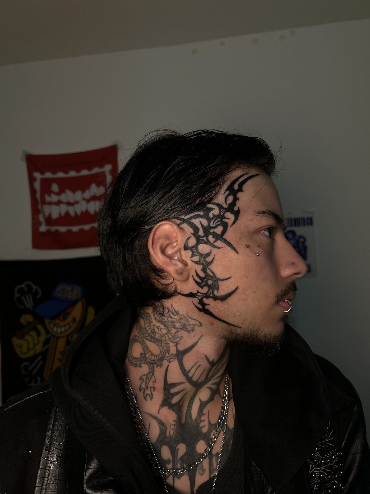
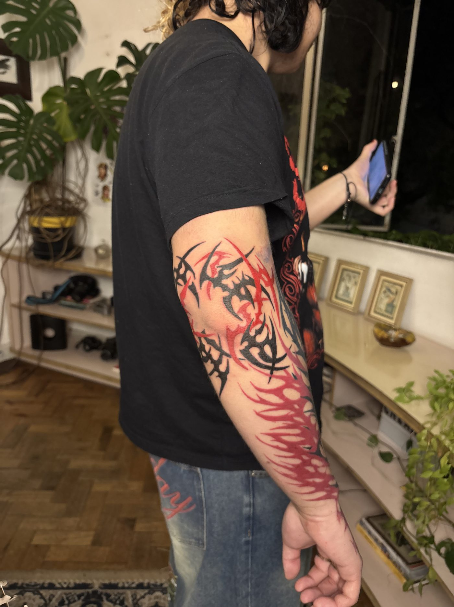
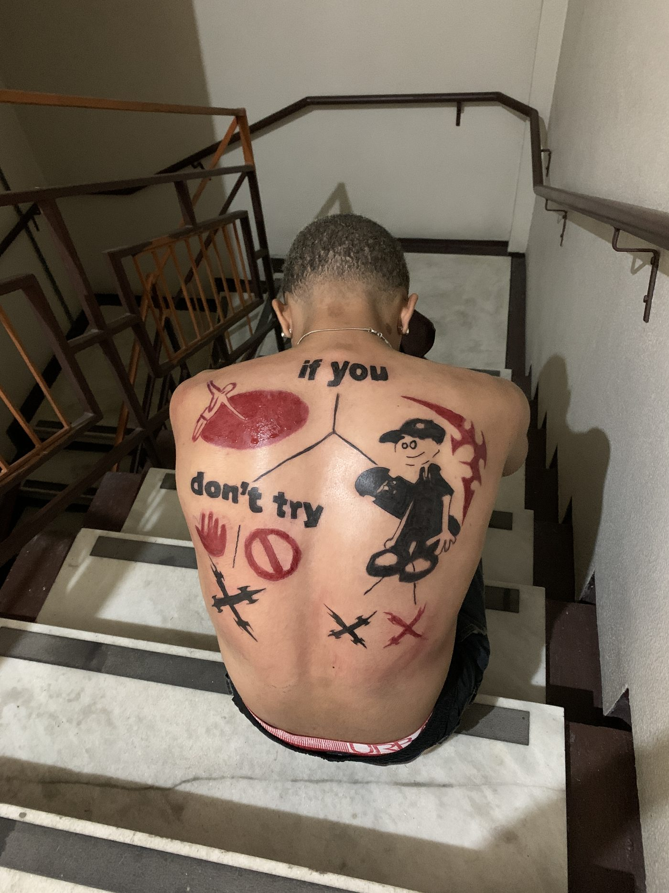
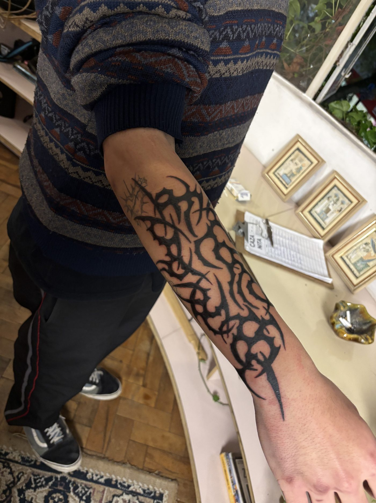
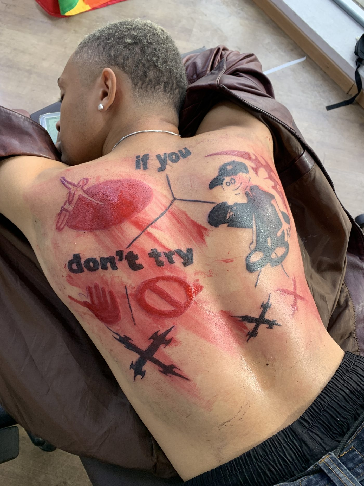
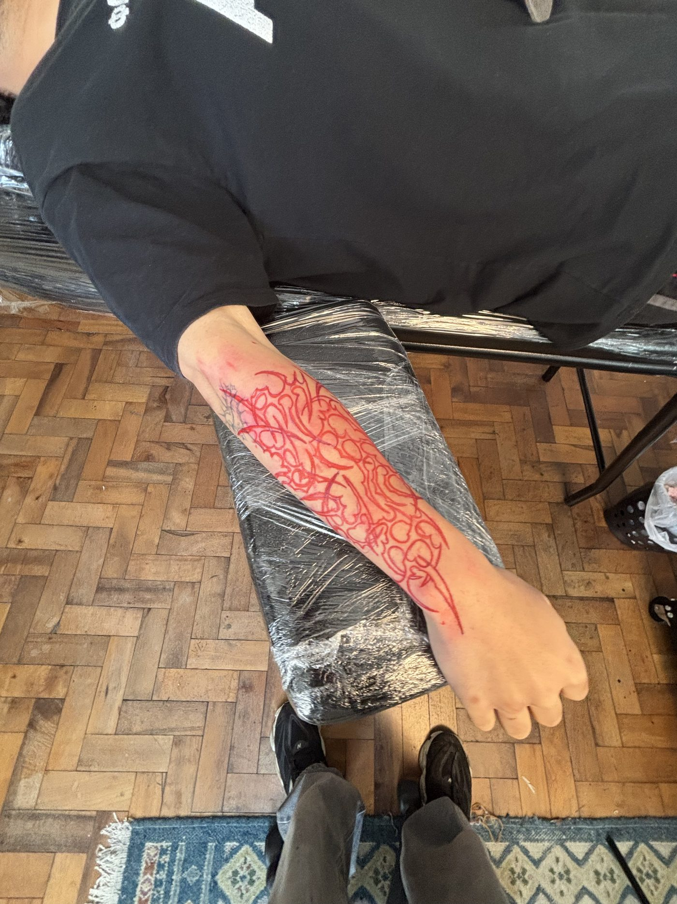

Conversa
Tu manda região, tamanho e referências de vibe. Ele responde com valor e data. Nada de desenho fechado antes do dia.
Técnica em que não é necessário o uso do decalque: o projeto é desenhado diretamente na pele.
Assim a arte traz a impressão de estar "vestindo" a pele, ficando esteticamente mais anatômica com a região escolhida pelo cliente.



Tu manda região, tamanho e referências de vibe. Ele responde com valor e data. Nada de desenho fechado antes do dia.

Com caneta dermatográfica, as linhas-mestras entram na pele seguindo a anatomia. Tu vê tudo no espelho.

Ajuste, apaga, redesenha. Só vai pra máquina quando tu curtir de verdade.

Sessão com pausas. No fim, cuidados explicados e combinado de foto curada.
Pra quem quer uma peça que pareça parte do corpo, não um adesivo. Freehand funciona quando tu confia no traço e chega sem desenho fechado na cabeça.
Não. A dor é a mesma da tatuagem, o que muda é o desenho ser feito na pele antes, com caneta. A parte da caneta não dói nada.
Pode, e ajuda. Referência serve pra ele entender a vibe (peso, densidade, tipo de forma). Ela não vai ser copiada.
Tu escolhe a região, o tamanho e a vibe. A composição nasce no dia, encaixada no teu corpo, e só vai pra máquina depois que tu aprovar no espelho.
A maioria das peças freehand fecha em uma sessão de 3 a 6 horas. Regiões grandes podem pedir uma segunda.
Depende da região e do tamanho. O valor é fechado no WhatsApp antes de marcar, sem surpresa no dia.
Na maioria dos casos, sim. Manda foto da tatuagem atual no orçamento que ele responde o que é possível.